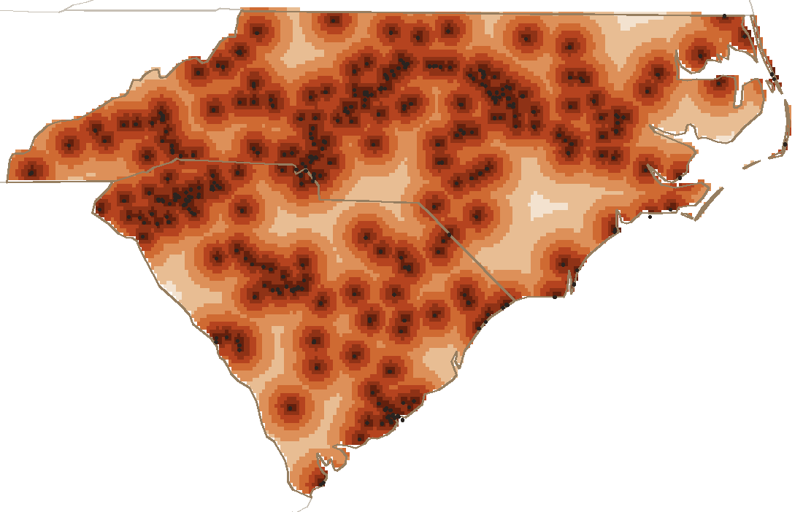

median distance to a pit, anywhere in the two states
2.4 mi
median distance from one pit to the next
373
places
142
recipes
1724
links between pages
You are never far from a pit
Every point in North and South Carolina, shaded by the distance to the closest of the 373 places on the map. Black dots are the places themselves. Half of both states is within 10.6 miles of one.

under 33–66–1010–1515–2222–34over 34miles to the nearest pit
The far corners
Miles to a pit
Where
42
36.55, -77.26
42
36.55, -77.30
41
36.55, -77.23
41
36.55, -77.19
40
36.52, -77.30
40
36.55, -77.16
Who has been at it longest
The 54 places here whose founding year is on a page. Stems stack where a year is crowded. Hover one for the name.
By decade
Decade
Pits
1910s
1
1920s
1
1930s
2
1940s
7
1950s
10
1960s
8
1970s
7
1980s
3
1990s
2
2000s
5
2010s
8
What is in the pantry
Across 142 recipes, counting each ingredient once per recipe. Measures and cutting words are dropped.
As a table
Ingredient word
Recipes
salt
55
pepper
41
vinegar
37
black
32
sugar
30
mustard
21
onion
21
powder
19
cider
19
flakes
18
sauce
17
brown
16
butter
16
ketchup
15
white
15
milk
14
When they are open
From the 158 places whose days we could read. Saturday is the day nearly all of them keep. Sunday is the one they drop: 58 of the 158 are shut, and another 215 have not published their days at all. Monday is the next thinnest, which is the pit crew catching up. Why Sunday →
As a table
Day
Open
Monday
107
Tuesday
123
Wednesday
139
Thursday
151
Friday
156
Saturday
155
Sunday
91
Who is kin to who
Every one of the 1724 links between pages, by the kind of page at each end. The row points at the column.
The distance map is computed on a grid of about two miles, clipped to the states' own outlines (Natural Earth, public domain) and measured against every place on the map, most of which come from OpenStreetMap under the ODbL. Everything else is counted straight out of the records.